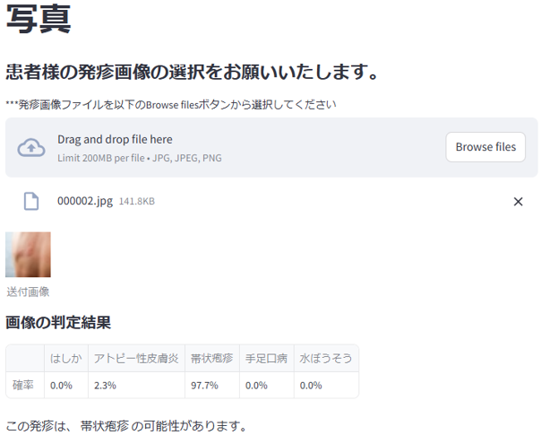
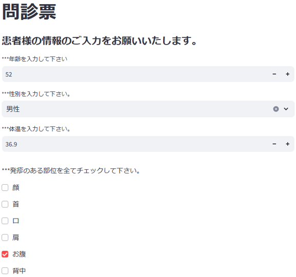
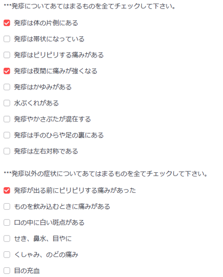
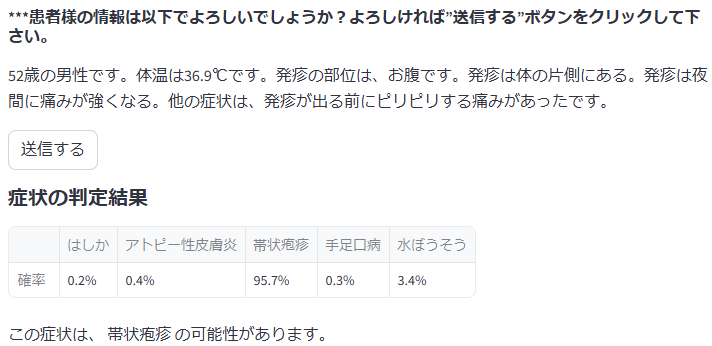

Image Input
Accepts a skin image and applies preprocessing before inference.
An educational and research prototype combining deep learning, skin images, and symptom information.
皮膚画像と問診情報を用いて、可能性のある疾患カテゴリーを 提示する教育・研究目的のディープラーニング試作アプリです。
The screenshots below show an earlier working version of the prototype. The public Google Cloud Run deployment is no longer active.




This project explores the use of deep learning models to analyze skin images and symptom information.
皮膚疾患に関連する画像分類、画像適格性確認、 問診テキスト解析を組み合わせた試作システムです。
The historical prototype supported five candidate categories: atopic dermatitis, measles, hand, foot, and mouth disease, chickenpox, and herpes zoster.
Accepts a skin image and applies preprocessing before inference.
Evaluates whether an input image falls within the intended scope of the prototype.
Uses a deep-learning image classifier to generate candidate-category output.
Converts questionnaire responses into text input for a symptom-classification component.
Displays model output for the five supported candidate categories.
An earlier version of this prototype was deployed on Google Cloud Run.
The public demo is currently unavailable because cloud hosting has been discontinued. The screenshots on this page show an earlier working version of the application.
The source code, notebooks, application structure, and historical execution instructions are available in the GitHub repository.
The trained model files are not publicly distributed. Therefore, the complete inference application cannot be run directly from the publicly available files.
The historical training data were assembled from external sources with differing copyright, licensing, and privacy conditions.
This is an earlier portfolio project and is not under active feature development. Minor documentation and maintenance updates may still be made.
The project remains publicly available as a record of my experience in medical AI application development.
This project is an educational and research prototype. It is not intended for clinical diagnosis, treatment selection, medical decision-making, or use as a medical device.
The displayed model outputs must not be interpreted as clinically validated disease probabilities.
本プロジェクトは教育・研究目的の試作です。 実際の診断、治療方針の決定、受診判断、医療機器としての使用を 目的としていません。健康上の問題がある場合は、 医師その他の有資格医療専門職へ相談してください。